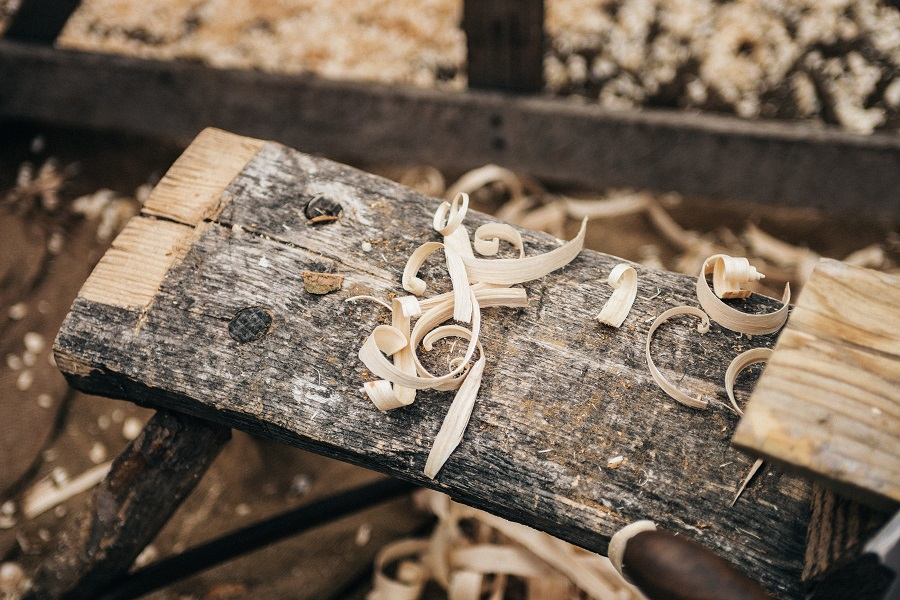

My Story
I have an uncle who is a woodworker. He is incredibly talented, but he only does it as a hobby. I remember always being amazed at the things he made and how he brought pieces of raw wood to life in such a beautiful and artistic way.
In 2014, I lost one of my younger brothers to suicide. His death was tragic and what happened to all who survived his death was something none of us were prepared for. The grief was more than most of us could bear. I had lost a lot of weight and had a hard time sleeping through the night for a few years. I went to the doctor and after performing many tests, they told me my experiences were the result of grief.
I was angry. I was sad. I was depressed. After learning how the grief became something I was experiencing physically I learned about yoga and breathwork. I began going to the lakes every morning and watching the sun rise while I meditated and/or practiced yoga. After a while of this, I began feeling inspired by all the amazing pieces of driftwood I would see floating in the water or around the edge of the lakes.
That is how Driftwood Jerry began: transforming trauma into art.
My Passion
Driftwood is a vision from beyond language, beyond any possible embodiment of meaning in a word. It symbolizes the Eternal relationship between wood and water, between forest and sea, between life and death. It symbolizes the ever-present moment, which is at once the past, present and future—here, now, in this nanosecond contained. Driftwood is but an infinitesimal glimpse into the wonder and mystery infused in the human psyche from the outer reaches of infinite Creation we call the Universe.
—Chris Maser
My Process
Having grown up just a stone's throw from the Rocky Mountains of Colorado, a deep reverence for nature and sustanability runs through every decision I make with my art.
Every piece of wood I use in my work is gathered by hand. I take great care in selecting my wood, making sure not to disturb local habitats and ecosystems, and leaving as little impact as humanly possible.
I never cut down live trees or other fauna to make my art. The pieces I create focus on the revitalization of nature, not its destruction.